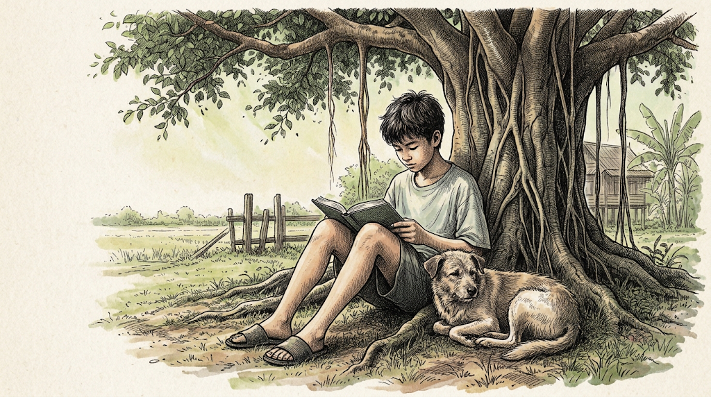

Today
1
Read for 33 minutes.
2
Write about the part you read today.
3
I will collect it and give you feedback.

Independent reading
You should feel proud of yourself.
Today
1
Read for 33 minutes.
2
Write about the part you read today.
3
I will collect it and give you feedback.
Silent reading
No talking, please.
Find your book · answer that row
New Kid
You are Jordan. Think about everything that has happened to you in this story so far. Describe the event that embarrassed you most, and say why it made you feel that way.
คุณคือจอร์แดน นึกถึงทุกอย่างที่เกิดขึ้นกับคุณในเรื่องนี้จนถึงตอนนี้ อธิบายเหตุการณ์ที่ทำให้คุณอับอายที่สุด และอธิบายว่าทำไมเหตุการณ์นั้นทำให้คุณรู้สึกอย่างนั้น
Hello, Universe
Pick one of the four children. Describe the moment today when that child felt most alone, and say why.
Savvy
Describe a moment today when Mibs felt two opposite things at once. Explain both, and say which was stronger.
Own Book
Write the title and author first. What most impressed you about the story today? Give reasons for your opinion.
Books open · the feeling matters as much as the event.